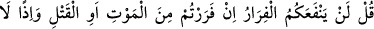
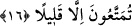

göre kolaydır.
20. Bunlar, düşman birliklerinin bozulup gitmedikleri evhamı içindedirler.
Müttefikler ordusu yine gelecek olsa, isterler ki, çölde göçebe Araplar içinde
bulunsunlar da, sizin haberlerinizi (uzaktan) sorsunlar. Zaten içinizde bulunsalardı
dahi pek savaşacak değillerdi.
“Andolsun ki onlar” Medine’deki evlerine dönmek için senden izin isteyen Hârise ve
Seleme oğulları “daha önce” hendek savaşından önce Uhud’da düşman karşısında
direnmeyip dağılmak istediklerinde onlarla ilgili daha önce geçen Âl-i İmrân sûresinin
âyetleri indirilip tevbe ettikleri zaman “sırt çevirip kaçmayacaklarına dâir Allâh’a söz
vermişlerdi.”
“Ahd (söz)”, bir şeyi her halde koruyup gözetmektir. Böyle korunup gözetilmesi
gereken mîsâka ahd denilmiştir. Muâhede, muâkade; yâni karşılıklı antlaşma, sözleşme
demektir. Nitekim Tâcü’l-masâdır’da böyle geçmektedir.
Yâni onlar düşmanı arkalarında bırakmayacaklarına, savaştan kaçmayacaklarına,
bozguna mahal vermeyeceklerine, Uhud’da yaptıklarını tekrar yapmayacaklarına söz
vermişlerdi. Sonra hendek savaşında (savaştan kaçmak için) izin isteyerek ahidlerini
bozdular.
“Allâh’a verilen söz mesuliyeti gerektirir!” tam olarak yerine getirilene kadar taleb
edilir ve zorunludur. “Falancadan hakkımı istedim” demek hakkımı ondan taleb ederek
aldım, demektir. Ya da kıyâmet günü verilen söz yerine getirildi mi yoksa getirilmedi mi
sorulacak, ona göre karşılığı verilecektir. Buna göre bu ifâde bir tehdiddir.
Hâfız şöyle demiştir:
Vefâ ve ahde sadâkati öğrenirsen iyi olur
Yoksa her gördüğün kişi seni zâlim bilir.
Âşıkların vefâkarlığı konusunda da şunları söylemiştir:
Ezel sabahı vaktinden ebed akşamının sonuna kadar,
Dostluk ve şefkat, bir söz ve bir and üzere olur.
16. (Rasûlüm!) De ki: Eğer ölümden veya öldürülmekten kaçıyorsanız, kaçmanın
size asla faydası olmaz! (Eceliniz gelmemiş ise) o takdirde de, yaşatılacağınız süre
çok değildir.